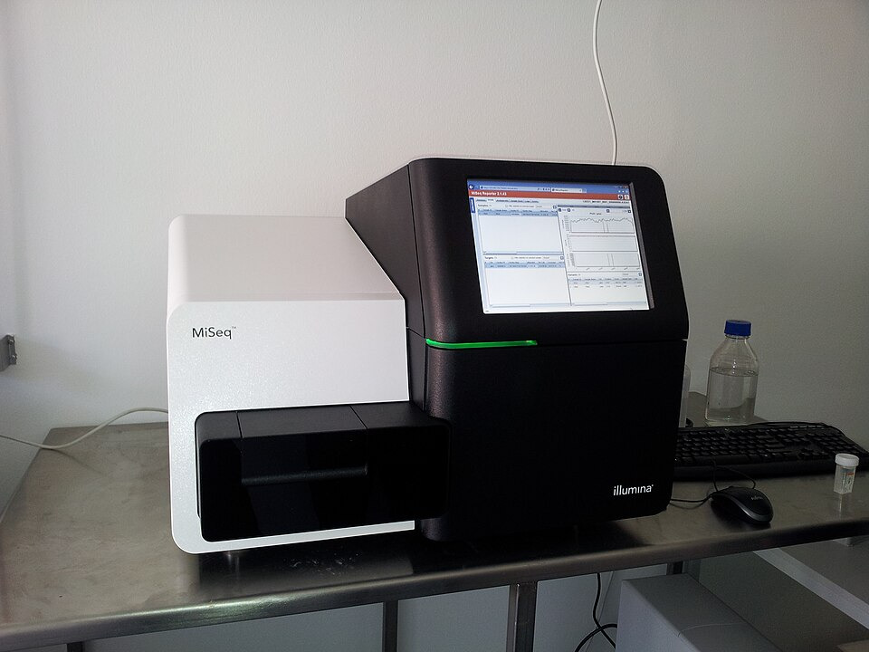
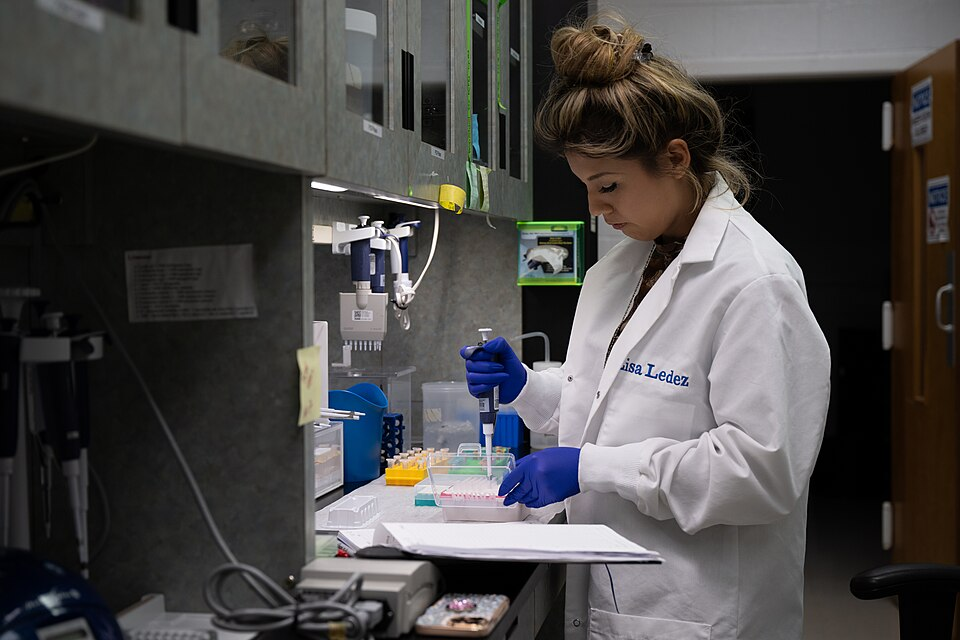
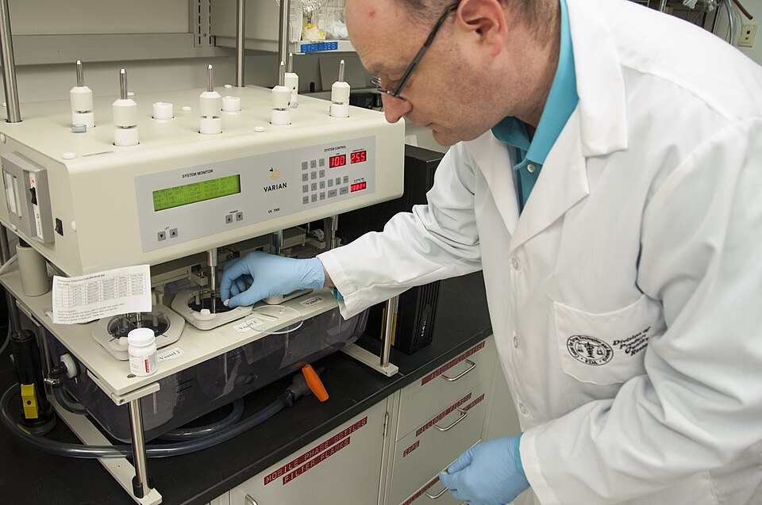
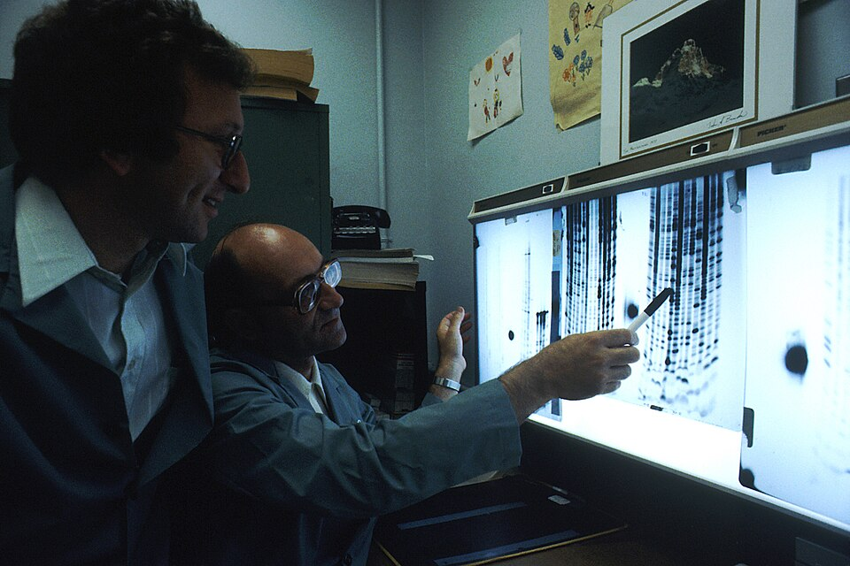
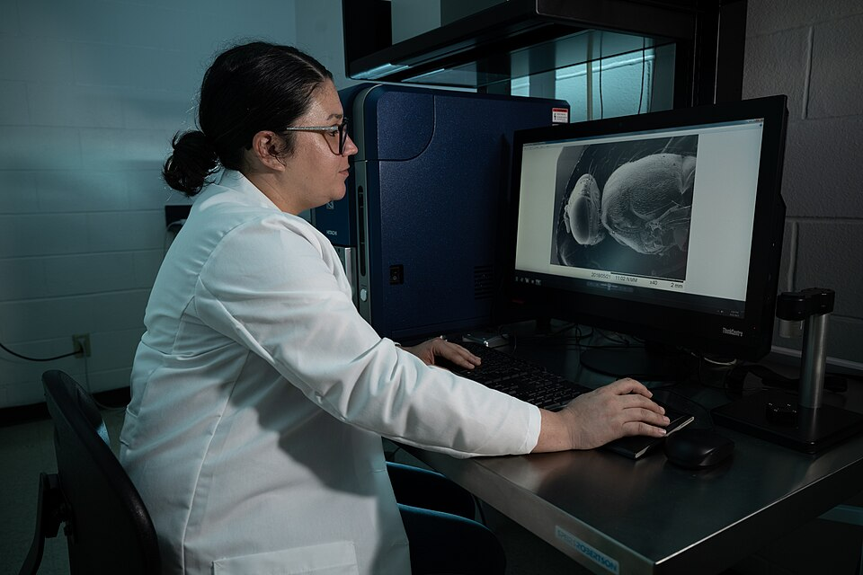
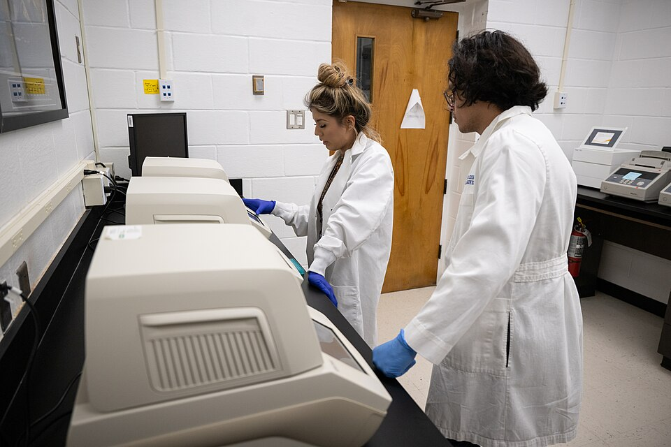

Visual builder
Design, configure, and deploy bioinformatics workflows visually, without getting buried in boilerplate.
Still stuck in static workflows?
Design, validate and export reproducible Nextflow pipelines on a visual canvas, with no pipeline syntax to write.
Built by Sequoia Applied Technologies
No code. No syntax. Just science. Design, configure, and deploy bioinformatics workflows visually, without getting buried in boilerplate.
Create Visual Nextflow Pipelines in 3 Easy Steps
Why GenXflo
Design, configure, and deploy bioinformatics workflows visually, without getting buried in boilerplate.
01 / 06
AI-powered workflow
Drag-and-drop workflow canvas
AI assistant
Build and connect processes effortlessly using our visual workflow builder. Create complete bioinformatics workflows in minutes through an intuitive drag-and-drop interface.
Reading your canvas…
FastQC → STAR → Salmon linked
Inputs and outputs matched
Draft pipeline ready
Smart, guided parameter forms
AI assistant
Easily set input files, adjust tool parameters, and manage compute resources using smart, guided forms. Simplifies bioinformatics workflow automation by handling syntax for you.
Suggesting defaults for STAR
Reference set to GRCh38
Threads: 8, paired-end on
All parameters validated
Production-ready pipeline export
AI assistant
Export clean, production-ready bioinformatics pipelines and run them anywhere: locally, on HPC, or in the cloud. Ensure your workflow stays reproducible, scalable, and easy to maintain.
Generating Nextflow code…
Containers pinned and documented
Targets ready: local, HPC, cloud
Pipeline exported ✓
001 / System — Drag
A drag-and-drop canvas designed to turn a pipeline idea into a structured workflow, with every tool one click away.
Pick a feature to see what it does. Each one is checked off as it loads.
01 / 08
Learn moreYour data and your results are our highest priority. Our platform brings visual design, AI validation and one-click export together so research teams can build Nextflow pipelines with confidence, every connection, parameter and container checked before a single run.
Use cases
Six kinds of teams, one visual way to build reproducible pipelines.

Automate high-throughput sequencing, from raw reads and QC to alignment, variant calling and reporting, with standardized, repeatable pipelines.

Audit-ready, deterministic pipelines for gene panels and molecular diagnostics, with locked parameters, versioned snapshots and full provenance.

Build modular, reproducible workflows across genomics, proteomics and cheminformatics, and prototype new components faster with AI assistance.

Design, share and publish reproducible analyses, and teach pipeline concepts visually, then export the full Nextflow code alongside your paper.

Centralize vetted module libraries, onboard faster with visual templates, and keep every project consistent with CI-validated, version-pinned pipelines.

Run standardized pathogen genomics and surveillance pipelines at scale, with locked parameters and versioned outputs so results stay comparable across labs and over time.
GenXflo replaces manual Nextflow scripting with a visual drag-and-drop builder that includes AI workflow validation. Instead of writing DSL2 code, users design pipelines on an intuitive canvas. GenXflo then automatically generates clean, production-ready Nextflow DSL2 scripts that follow best practices and run on any Nextflow-compatible environment.
Yes. GenXflo exports workflows with built-in Docker or Singularity containers, ensuring fully reproducible pipelines. The generated Nextflow workflows run seamlessly on local machines, HPC clusters, and major cloud platforms such as AWS, Azure, and Google Cloud through standard Nextflow execution.
Absolutely. GenXflo exports human-readable, modular Nextflow DSL2 code that you can modify, extend, version-control, or integrate into existing projects. This allows both beginners and advanced users to adapt pipelines to specific research needs while retaining reproducibility.
Pipeline generation in GenXflo is instant - the platform creates fully validated Nextflow workflows within seconds. Because each pipeline is optimized and container-ready, execution is typically much faster than traditional scripting workflows. Using Nextflow’s built-in parallelization, results and output reports are produced in a fraction of the usual time, even for large datasets.
GenXflo provides capabilities that ChatGPT simply cannot offer. Instead of ephemeral AI-generated text, GenXflo gives you a persistent, visual pipeline workspace with versionable, shareable components and parameters your entire team can rely on. It produces consistent, valid Nextflow DSL2 code every time, backed by curated domain libraries, sensible defaults, and guardrails that prevent common mistakes in tools, flags, and container choices. Where ChatGPT is a smart intern that drafts code, GenXflo is the reliable pipeline workbench built for real scientific teams.
Yes. The platform includes MCP support for intelligent workflow orchestration and seamless integration between services. For setup instructions, configuration details, and usage examples, please refer to the Documentation.
MCP enables AI agents to seamlessly discover and access bioinformatics capabilities through a standardized interface, reducing manual setup and helping generate faster, more reproducible pipelines.
GenXflo
Design, validate and export reproducible Nextflow pipelines on a visual canvas, with no pipeline syntax to write.
Get in touchWe welcome your comments, questions, or feedback! Feel free to share with us by submitting a message below.